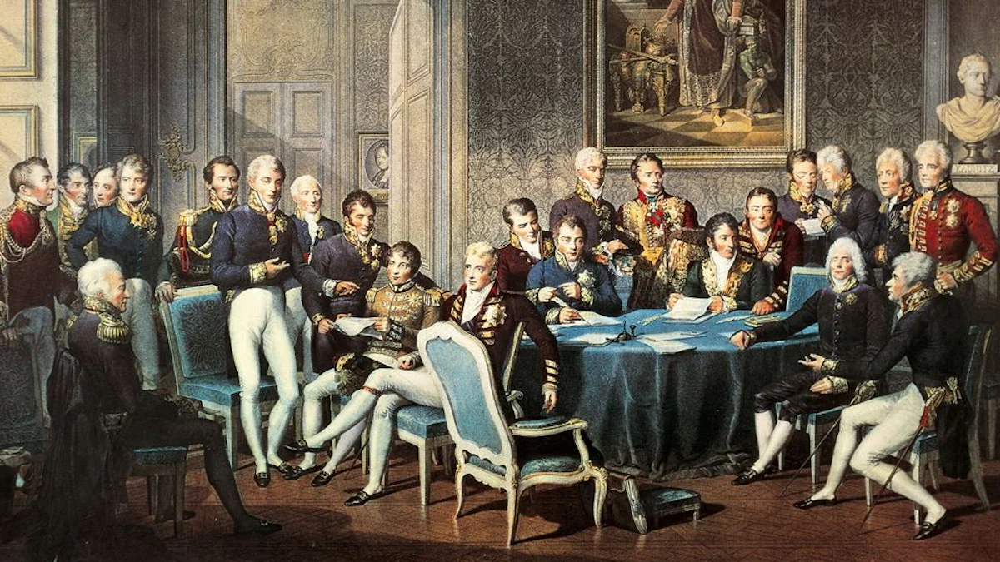
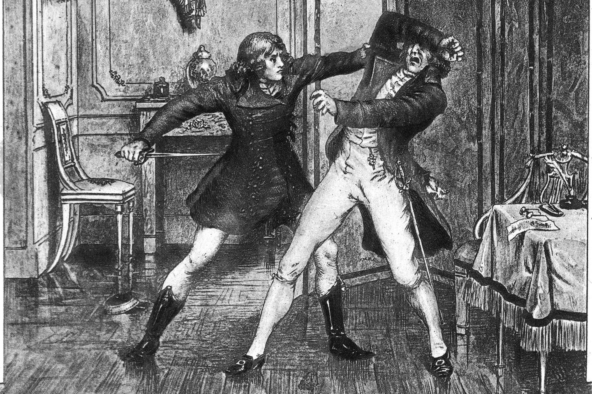
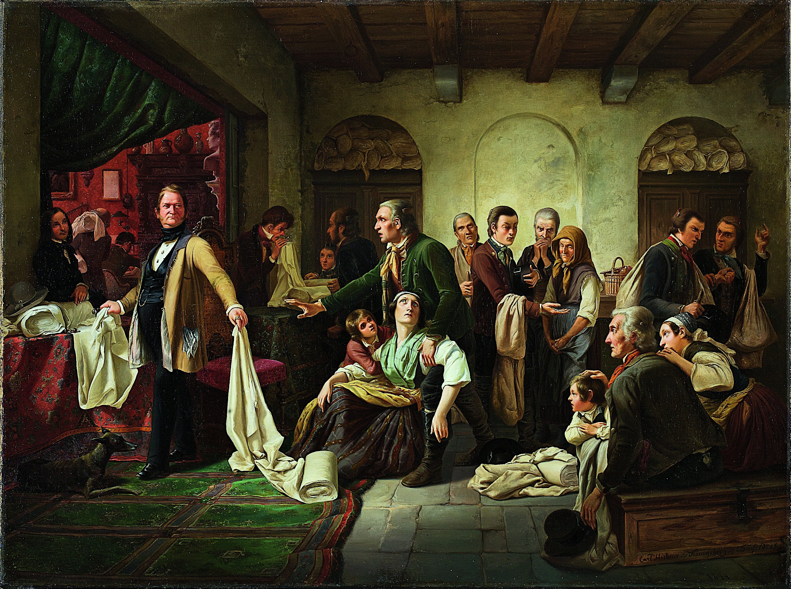
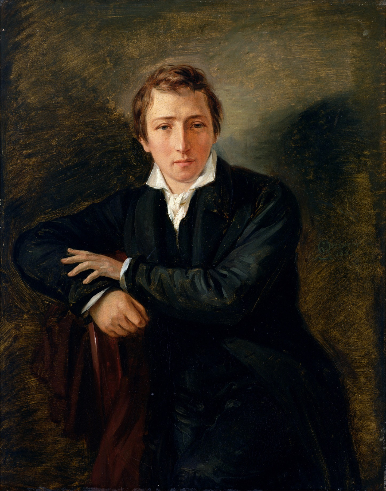
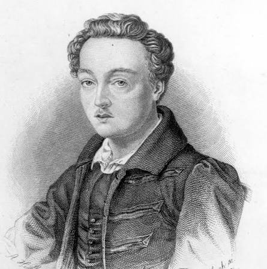
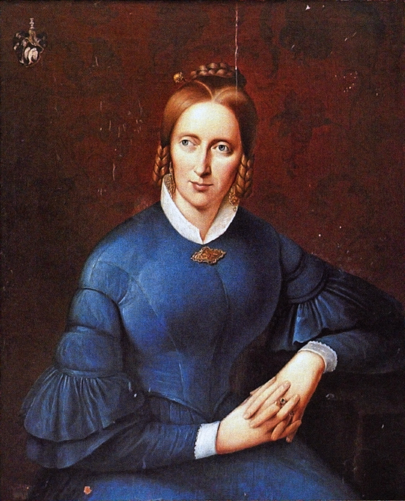
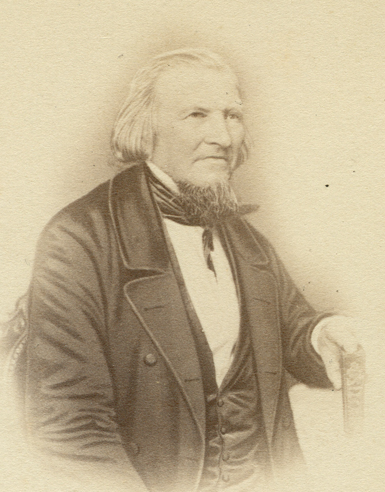
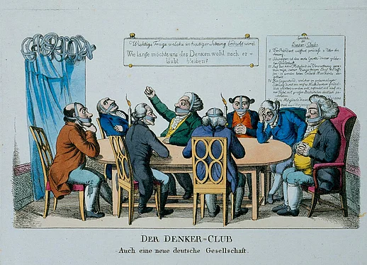

Interaktive Zeitleiste (1815–1848)
Klicken Sie auf die Wendepunkte der Epoche, um historische Hintergründe, Schlüsselereignisse und die Reaktionen der Dichter einzusehen.
Restauratives System & Zensurapparat
Nach dem Sieg über Napoleon versuchten die Fürsten unter der Führung des österreichischen Staatskanzlers Fürst von Metternich, die alte absolutistische Ordnung wiederherzustellen. Die Angst vor revolutionären Ideen führte zu einem flächendeckenden Spitzel- und Zensurstaat.

Restauration & Legitimität
Die Großmächte stellten die fürstlichen Privilegien wieder her. Der Wunsch des Bürgertums nach einem deutschen Nationalstaat wurde ignoriert; stattdessen wurde der "Deutsche Bund" als loser Fürstenbund gegründet.

Unterdrückung der Opposition
Nach der Ermordung des Dichter Kotzebue verbot Metternich Burschenschaften, überwachte Universitäten und unterwarf Schriften unter 20 Bogen der Vorzensur.
Wie die Zensur Strophen strich
Zensoren strichen kritische Worte in Gedichten und Flugblättern. Testen Sie den Schalter, um die unzensierte Fassung freizulegen!
Soziale Realität & Pauperismus
Neben dem politischen Verlangen nach Freiheit war der Vormärz von struktureller Massenarmut geprägt – dem Pauperismus.

Der Schlesische Weberaufstand (1844)
In den schlesischen Eulengebirgen stürzten die Löhne für Handweber ab. Verzweifelte Weber stürmten die Verlegerhäuser. Der Aufstand wurde blutig niedergeschlagen, löste jedoch eine Welle der Solidarität aus.
Autoren & Interaktive Werkanalyse
Die Dichter des Vormärz verstanden sich als politische Vorkämpfer für Freiheit und Einheit.

Junges DeutschlandHeinrich Heine
1797–1856 • Paris-ExilSatiriker und Romantik-Kritiker. Musste 1831 ins Pariser Exil fliehen.

Radikaler UmsturzGeorg Büchner
1813–1837 • GießenVerfasser der Flugschrift Der Hessische Landbote und Dramatiker.

BiedermeierAnnette v. Droste-Hülshoff
1797–1848 • MünsterlandVertreterin der Biedermeier-Dichtung mit tiefen psychologischen Einblicken.

National-LiberalHoffmann v. Fallersleben
1798–1874 • HelgolandDichter des Liedes der Deutschen (1841). Verlor 1842 wegen seinen Unpolitischen Liedern seine Professur.
August Heinrich Hoffmann von Fallersleben: „Das Lied der Deutschen“ (1841)
Klicken Sie auf die Kategorien, um die sprachlichen und politischen Kernmotive im Text hervorzuheben.
Zeitgenössische Karikatur: „Der Denker-Club“
Eine der berühmtesten Bildsatiren des Vormärz (ca. 1819/1825). Sie verhöhnt die Knebelung der Meinungsfreiheit durch Maulkörbe.
